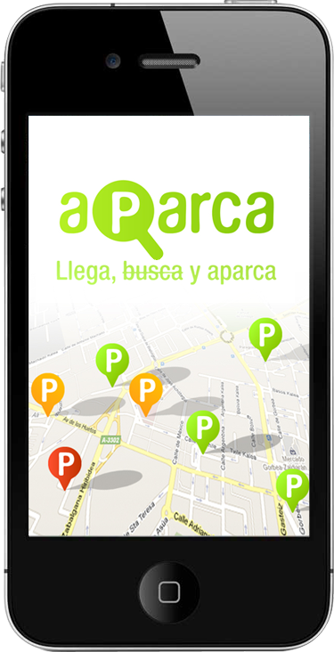

Accede a la versión móvil

Aparca.info permite encontrar fácilmente gran parte de los aparcamientos públicos dentro de España.
Más información
Nota de prensa
@aparcainfo
aparca.tumblr
Equipo
Gonzalo Ayuso
- Programación
Bruno Garcia
- Maquetación
Sebastian Gomez
- Diseño gráfico
Jon Parro
- UX
Colaboradores